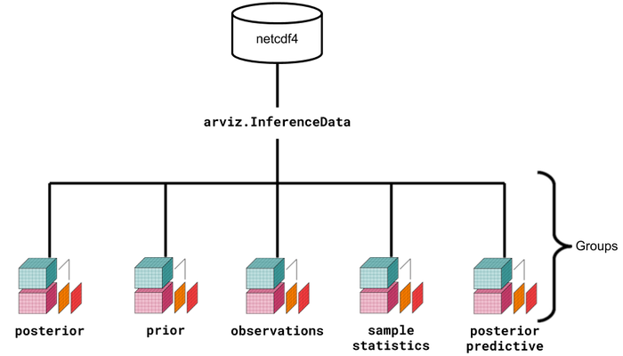

Bayesian modelling using ArviZ
Introduction to Bayesian Model
A Bayesian model is a statistical model which uses probability to represent the uncertainty within the model and also the uncertainty of the input and the output of a model. Bayesian methods can be a little difficult to use both mathematically and numerically.
When working with Bayesian models there are few tasks that need to be considered:
To determine the quality of the inference.
Evaluation model assumptions and model predictions.
Comparison of models.
Preparation of the results.
The inference process derives the posterior probability — which is the most important in Bayesian statistics - with two other functions like prior probability and likelihood function. The correct visualization, analysis, and interpretation of these distributions is very important to answer the questions that improve the inference process. Bayesian inference computes the posterior probability according to Bayes' theorem:

To make things easier let's focus on how to do Bayesian analysis and visualization using Probabilistic programming languages which implement functions to easily build Bayesian models together with efficient automatic inference methods. ArviZ is a Python package for exploratory analysis of Bayesian models. ArviZ aims to be a package that integrates seamlessly with established probabilistic programming languages like PyStan and PyMC. Where the aim of the probabilistic programming languages is to make it easy to build and solve Bayesian models, the aim of the ArviZ library is to make it easy to process and analyze the results from the Bayesian models. There are a couple data structures that are used within the ArviZ library. They are:
- xarray.Dataset
- arviz.InferenceData
- netCDF

Above is a visual representation of the data structures and their relationships. Although seemingly more complex at a glance the ArviZ devs believe that the usage of xarray, InferenceData, and NetCDF will simplify the handling, referencing, and serialization of data generated during Bayesian analysis.Data from probabilistic programming is naturally high dimensional. Because of such complexity ArviZ must handle the data generated from multiple Bayesian Modeling libraries. This is an application that the xarray package handles quite well. The xarray package lets users manage high dimensional data with human readable dimensions and coordinates quite easily.
PyMC3 is a Python library for probabilistic programming with a very simple and intuitive syntax. ArviZ, a Python library that works hand-in-hand with PyMC3 and can help us interpret and visualize posterior distributions. And we will apply Bayesian methods to a practical problem, to show an end-to-end Bayesian analysis that move from framing the question to building models to eliciting prior probabilities to implementing in Python the final posterior distribution. Before we start, let’s get some basic intuitions out of the way: Bayesian models are also known as probabilistic models because they are built using probabilities. And Bayesian’s use probabilities as a tool to quantify uncertainty. Therefore, the answers we get are distributions not point estimates. Bayesian Approach Steps 1. Establish a belief about the data, including Prior and Likelihood functions. 2. Use the data and probability, in accordance with our belief of the data, to update our model, check that our model agrees with the original data. 3. Update our view of the data based on our model.
Using ArviZ library
I am using Spanish High Speed Rail tickets pricing data set and apply Bayesian methods to work on price optimization,
from scipy import stats
import arviz as az
import numpy as np
import matplotlib.pyplot as plt
import pymc3 as pm
import seaborn as sns
import pandas as pd
from theano import shared
from sklearn_pandas import DataFrameMapper
from sklearn import preprocessing
from sklearn.impute import SimpleImputer
df = pd.read_csv('renfe.csv')
df.drop('unnamed: 0', axis = 1, inplace=True)
df = df.sample(frac=0.01, random_state=99)
df.head(3)

with pm.Model() as model_g:
a = pm.Uniform('a', lower = 0, upper=300)
b = pm.HalfNormal('b', sd=10)
c = pm.Normal('c', mu = a, sd = b, observed = df['price'].values)
trace_g = pm.sample(1000, tune=1000)
az.plot_trace(trace_g);
- On the left side, is the KDE plot, — it gives the probability of the y-axis for each value of the x-axis.
- On the right, is individual sampled values at each step during the sampling.
Plotting joint distribution
az.plot_joint(trace_g, kind='kde', fill_last=False);

There is no correlation seen between mu and sd. The below summary and the result of bayesian inference can be visually seen by creating plot with the mean and Highest Posterior Density (HPD) of a distribution.
az.summary(trace_g)

az.plot_posterior(trace_g);

Bayesian inference, gives out the distribution for all the values. ArviZ uses 94% as the default value to get the distribution.